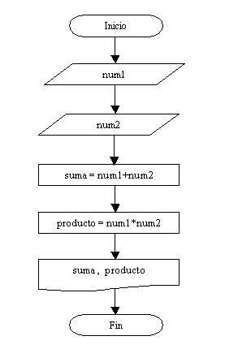

ALGORITMOS SECUENCIALES

Un algoritmo secuencial es una serie de instrucciones o pasos lógicos que se ejecutan en un orden específico, uno después del otro, sin considerar condiciones o decisiones basadas en evaluaciones. Cada instrucción se ejecuta en secuencia, completando una tarea antes de pasar a la siguiente. Es un tipo de algoritmo lineal donde no se realizan bifurcaciones o saltos en la ejecución del programa. El flujo del algoritmo sigue una secuencia fija y predefinida, lo que lo hace adecuado para tareas simples y lineales donde no se requiere tomar decisiones basadas en condiciones.